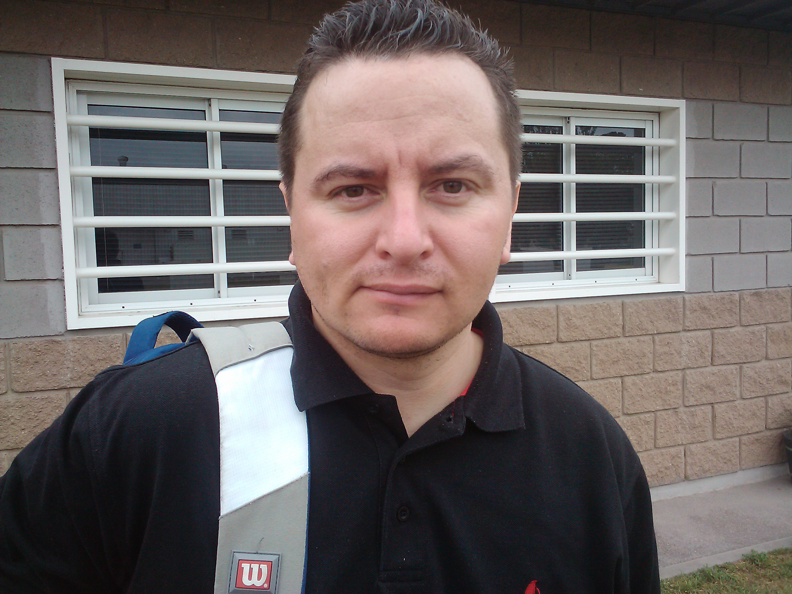

Curriculum Vitae
Datos Personales
Nombre: Jose Federico Peralta
Domicilio: Yafu 7478-Arguello-Cordoba-Argentina
Nacionalidad: Argentino
Estado Civil: Casado
Educación
Experiencia Laboral
Informacion Personal

Perfil
Mi nombre es Jose Federico Peralta, soy Analista de Sistemas de Computacion, me dedico a la parte de Networking
y servidores Linux (CentOS,Debian,Ubuntu), cuento con mas de 12 años de experiencia en el medio.
Idiomas
- Ingles
- Lectura: Intermedio
- Escritura: Basico
- Dialogo: Basico